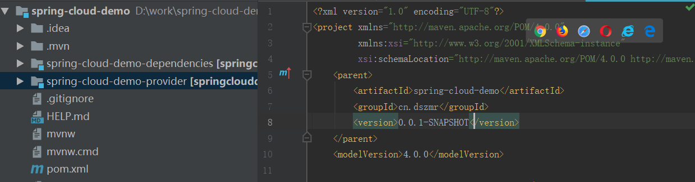
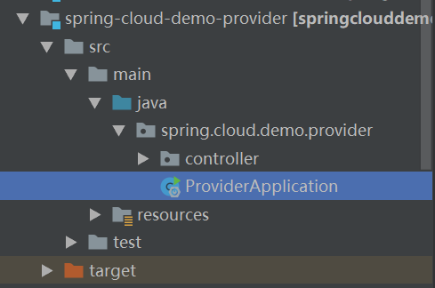
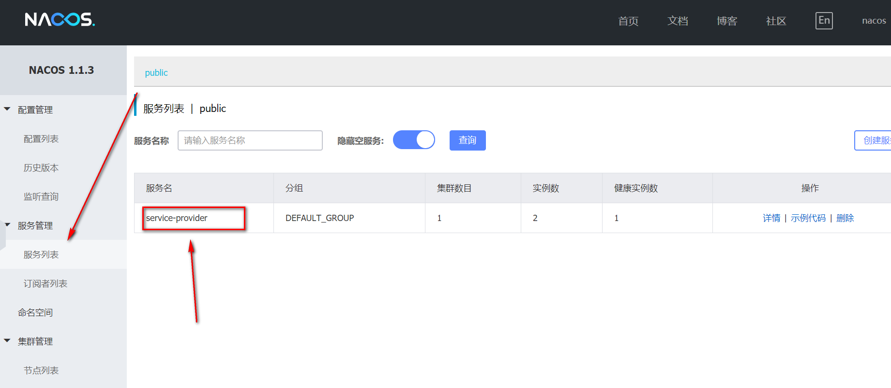

Nacos需要部署 所以想自己部署的同学请移步docker学习
部署操作步骤
- Clone 项目
git clone https://github.com/nacos-group/nacos-docker.git cd nacos-docker
- 单机模式
docker-compose -f example/standalone-mysql.yaml up -d
3.查看日志
docker-compose -f example/standalone-mysql.yaml logs -f
4.Nacos 控制台
http://服务器地址:8848/nacos
如果想以后再部署的同学可以使用我的nacos
http://106.54.8.126:8848/nacos
账号：nacos
密码：nacos
服务注册与发现
新增模块 spring-cloud-demo-provider服务提供者

添加pom依赖
注：如遇maven报错请移步《maven报错解决》
项目结构

- 创建启动类
import org.springframework.boot.SpringApplication; import org.springframework.boot.autoconfigure.SpringBootApplication; import org.springframework.cloud.client.discovery.EnableDiscoveryClient; @SpringBootApplication @EnableDiscoveryClient public class ProviderApplication { public static void main(String[] args) { SpringApplication.run(ProviderApplication.class, args); } }
2.创建controller
@RestController public class EchoController { @GetMapping(value = “/echo/{string}”) public String echo(@PathVariable String string) { return “hello “+string; } }
3.创建application.yml
spring:
application:
# 服务名
name: service-provider
cloud:
nacos:
discovery:
# 服务注册中心
server-addr: 106.54.8.126:8848
server:
服务端口
port: 8071
management:
端点检查（健康检查）
endpoints:
web:
exposure:
include: “*”
运行项目
访问 ： http://localhost:8070/echo/dsz
再登录nacos
前面有说如何登录

显示服务名即表示服务注册成功